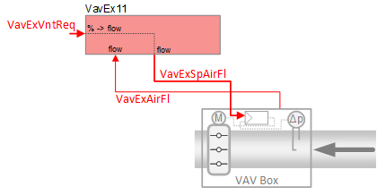
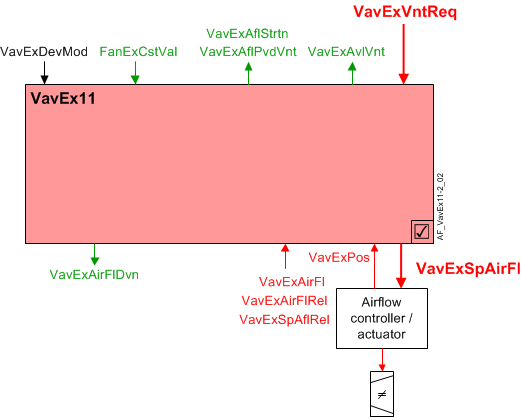

抽取空气 VAV 箱，外部流量控制 (VavEx11)
 | 该应用程序功能连接到external air volume flow controller/actuator位于 VAV 盒子上。它输出一个air volume flow setpoint向控制器发送信号，并从控制器接收测量的空气体积流量信号。 空气体积流量设定值是根据抽气流量的要求计算的，相对于流经供应终端的空气量，遵循以下原则：«extract tracks supply». |
Required elements and how to configure them:
元素 | I/O | 信号类型 |
|---|---|---|
VavExSpAirFl“抽气体积流量设定值” | On-board output, Extract air VAV position | Setpoint for air volume flow, 0…10V |
orKNX PL-Link device, 抽取空气 VAV | Air volume flow control | |
VavExAirFl "Extract air VAV air volume flow" Not required 如果KNX PL-Link device，因为该信号通过总线传输。 | On-board output, Extract air VAV air volume flow | 0…10V |
Function
下图显示了与此应用程序函数关联的 BACnet 对象。主要信号流程总结如下：
VAV 提取通气请求（VavExVntReq) 被接收并处理为抽气体积流量设定值的输出信号 (VavExSpAirFl).
基本功能：接受来自相关房间控制器的排风请求信号，并将其映射到排风量流量设定值；在发送信号之前通过设备模式逻辑开关传递信号（如VavExSpAirFl) 至外部气流控制器/执行器。

| 命令或请求（或相关） |
| 条件或状态或可用性的通知 |
| 设备模式 |


Air flow setpoint for external air flow controller / actuator:气流设定值 AO (VavExSpAirFl) 是从表示抽气通风请求的输入值导出的。 （VavExVntReq）。抽气通风请求值由房间控制功能计算并标准化为 0 至 100%。
VavExSpAirFl通过 0-10V DC 信号或联网 I/O 将气流控制器/执行器驱动至 PL-Link 上的现场设备。
Input signals from external air flow controller / actuator:当使用外部控制器/执行器时，AF 需要来自压差传感器的体积空气流量输入信号。这个 AI 信号（VavExAirFl）以空气流量为单位。它由供应链逻辑使用。排气阻尼器位置的 AI (VavExPos) 仅用于显示目的。
Saturation signal:饱和信号（VavExAflStrtn) 是一个二进制对象，当气流控制回路在超过内置时间延迟的时间内无法获得足够的空气来达到设定点时，该对象为 True（“饥饿”）。
Note
VavExAflStrtn如果参数始终关闭EnStrtnCal= 0（否）。这允许用户从饱和压力重置系统中排除特定终端。
Air flow deviation signal:抽气流量偏差（VavExAirFlDvn) 信号（以百分比表示）用于空气处理机组的风扇速度（静压）重置策略。它是通过测量排气管的气流并将其与气流设定值进行比较而获得的。
VavExAirFlDvn = VavExSpAflRel减VavExAirFlRel
VavExAirFlDvn如果条件无效，则 will = 0。
Available status:当 VAV 排气风门可用于排气通风时，指示可用性的二进制输出信号（VavExVntReq）将为“是”（可用）。
要使可用状态为“是”，设备模式必须等于“控制模式”（调制）。
输出信号VavExAflPvdVnt是可用于抽气通风的空气流量。什么时候VavExAvlVnt为 True，最大值 (VavExAflMaxVnt）被转移到VavExAflPvdVnt.
VavExAflPvdVnt（VAV 为通风提供的抽气流量）是来自 VAV 抽气箱的最大流量（以工程单位表示）的总和。这些值在每个提取 VAV 中设置，以获得段中的最大流量。
Device mode:设备模式的输入信号是多状态值。
VavExDevMod支持以下状态：
- Off
- Control mode (modulation)
- Max.air vol.flow
- Min.air vol.flow
- Smoke ctrl.air flow setp (manually entered damper setpoint value for smoke control)
Fan coasting feature:风扇滑行功能可防止 AHU 风扇滑行时过早关闭排气风门。在操作模式之间切换（例如，从舒适模式切换到经济模式）期间可能会发生这种情况。
风扇滑行功能在以下情况下激活：
- The extract air damper is the only extract damper that is open – all other extract air dampers are closed.
- The AHU fan has been turned off and is coasting down.
- The air flow setpoint signal (VavExSpAirFl) while on its way to zero, falls below the air flow demand hysteresis setting (HysAirFlDmd).
当这些条件为真时，布尔抽气风扇惯性滑行信号 (FanExCstVal) 将等于 1 (True)，并且风门将重置为其最后（之前）的操作位置/值。这使得风门在风扇惯性滑行时保持打开状态，以防止排气管道过压。
除了将风门冻结到位的风扇惯性滑行信号外，内部计时器功能在以下情况下也被激活：VavExSpAirFl) 最初降至 (HysAirFlDmd）。风扇惯性滑行信号和计时器（60 秒）必须同时完成（返回 False），抽气风门才能关闭。见下图。
Note
内部定时器独立运行，无论VavExSpAirFl。一旦计时器被激活，排气风门就会冻结在适当的位置，直到计数器达到零，之后风门可能会关闭。

Configuration
 Objects
Objects
描述 | 目的 | 类型 | 默认值 |
|---|---|---|---|
Air flow settings | |||
Extract air VAV smoke control air volume flow setpoint | VavExSpAflSmk | ACnfVal | 50 [m3/h] |
Extract air VAV maximum air volume flow for ventilation | VavExAflMaxVnt | ACnfVal | 100 [m3/h] |
Extract air VAV minimum air volume flow for ventilation | VavExAflMinVnt | ACnfVal | 0 [m3/h] |
 Parameters
Parameters
描述 | 范围 | 默认值 |
|---|---|---|
Deviation calculation | ||
Enable deviation calculation 0:No | EnDvnCal | 1:Yes |
Saturation calculation | ||
Enable saturation calculation 饱和信号计算逻辑： (VavExPos > StrtnLvl) and (VavExAirFlDvn> AirFlErLm）。此功能用于 AHU 风扇静压重置。另请参见饱和信号部分。 0:No | EnStrtnCal | 1:Yes |
Saturation level | StrtnLvl | 90 [%] |
Air volume flow error limit | AirFlErLm | 0 [%] |
Switch-on delay saturation | DlyOnStrtn | 60 [s] |
Airflow demand | ||
Switch-on point for air flow demand | SwiOnAirFlDmd | 4 [%] |
Hysteresis for air flow demand | HysAirFlDmd | 2 [%] |
Interface
界面 | 描述 | 类型 | 参考号 | 拥有者 |
|---|---|---|---|---|
VavExSpAirFl | Extract air VAV setpoint for air volume flow | AO | ◉ | Room segment / Device |
TrndVavExSpAfl | Trend for extract air VAV setpoint for air volume flow | FtrSel | ● | - |
VavExSpAflRel | Extract air VAV setpoint for relative air volume flow | ACalcVal | ● | - |
VavExAirFl | Extract air VAV air volume flow | AI | ◉ | Room segment / Device |
TrndVavExAirFl | Trend for extract air VAV air volume flow | FtrSel | ● | - |
VavExAirFlRel | Extract air VAV relative air volume flow | ACalcVal | ● | - |
VavExAirFlDvn | Extract air VAV air volume flow deviation | ACalcVal | ● | - |
VavExAflStrtn | Extract air VAV air volume flow saturation 0:Satisfied | BCalcVal | ● | - |
VavExPos | Extract air VAV position | AI | ◉ | Room segment / Device |
VavExDevMod | Extract air VAV device mode 1:Off | MPrcVal | ● | - |
VavExVntReq | Extract air VAV ventilation request | ACalcVal | ● | - |
VavExAvlVnt | Extract air VAV available for ventilation 0:No | BCalcVal | ● | - |
FanExCstVal | Coasting value of extract air fan 0:Off | BCalcVal | ● | - |
VavExAflPvdVnt | Extract air VAV provided air volume flow for ventilation | ACalcVal | ● | - |
VavExSplyAir | Extract air VAV supply chain for air | GrpMbr | ● | - |
VavExSpAflSmk | Extract air VAV smoke control air volume flow setpoint | ACnfVal | ● | - |
VavExAflMaxVnt | Extract air VAV maximum air volume flow for ventilation | ACnfVal | ● | - |
VavExAflMinVnt | Extract air VAV minimum air volume flow for ventilation | ACnfVal | ● | - |
Engineering and commissioning
在此 AF 中，VavExSpAirFl 的值绝不能超过其 Present-Value-2 属性的值。 Present-Value-2 用作标称空气流量。因此，VavExSpAirFl 不能超过标称空气流量值。
检查风门执行器安装是否正确。执行器接线错误或安装不当是常见问题的主要原因。
相对空气流量 (VavExAirFlRel) 根据箱体空气流量 (AirFlNom) 的标称（额定）值标准化为 VavExAirFl 的百分比 (0 - 100%)。